UX Project: Merri
Rethinking the Design of Merri's 3D Event Builder Application
What is Merri?
Merri is a company that provides event planners an opportunity to visualize their event's floor plan and layout in 3D. Users of the Merri application can create a vision board, which allows them to choose theme, colors, and style for their party, and then move into a 3D application that allow the user to visually create their space.
What is the main problem for users?
When some of our users go to setup floorplans & design their space in 3D, the feedback we received is that they don't know where to start. The interface is not easy or intuitive for the novice user.
How can we improve the design for novice users?
When doing an overall analysis of the app, we believe there are 3 ways to improve the UI for a user who is not familiar with the application or 3D interfaces. The options are presented in level of difficulty for the development team to implement
- Add an on-screen tutorial (LOE 1)
- Add a wizard to create an automatic layout (LOE 2)
- Redesign the interface for more visible tool options (LOE 3)
Option 1 - Add an on-screen tutorial
An on-screen tutorial can be added for first time users upon on the first login to the application. In this option, we would like to walk through the most important areas of the application. This includes walking the user through setting up and importing their first table, editing the table once imported, and how to navigate through the scene.
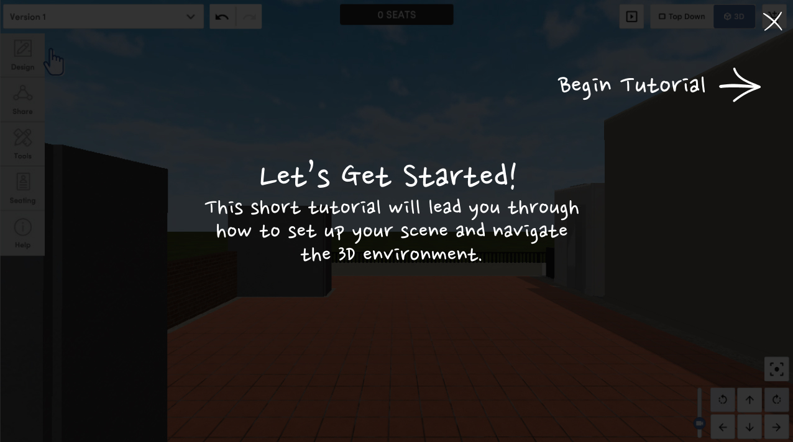Option 2 - Add a wizard to create an automatic layout
The purpose of the wizard is to allow the user to easily setup their scene. The user can go through a series of steps to automatically configure their layout for their event.
The wizard will take the user through six different steps. An optional 7th step can be added for floor plan setup, however we've found that it is best to keep the wizard step to a minimum in order to avoid drop-off by the user. The steps are as follows:
- Select Event Type:
The options presented here will be: Ceremony Only, Reception Only, Ceremony & Reception, Party or Other Event. The option selected here will change the content of the steps in the wizard. For example, if a user selects Ceremony Only, the options in Step 2: Event Options will be different than if the user selects Reception Only. - Select Event Options:
The options presented here will be different depending on the event type. Some options may include: Band, DJ, Guest Seating Section, Gifts Table, etc. Similar to step 1, the options selected here will influence the options available for future steps. - Choose Your Number of Guests:
Inputting the number of guests will automatically configure the amount of tables generated in the 3D scene. - Select Your Tables:
Depending on the type of tables needed from previous steps, we will see options for the user to select the style of table for the host, guests, gifts table, desserts table, or any other tables needed for the event. - Select Your Table Accessories:
Depending on the type of tables selected in the previous step, the user will have the option to select accompanying table accessories such as chairs, table centerpieces, menus, etc. - Select Your Table Setting:
In the final step, the user will build their table setting with options to select the tablecloth, the table runner, napkins, flatware, and all other table setting options.
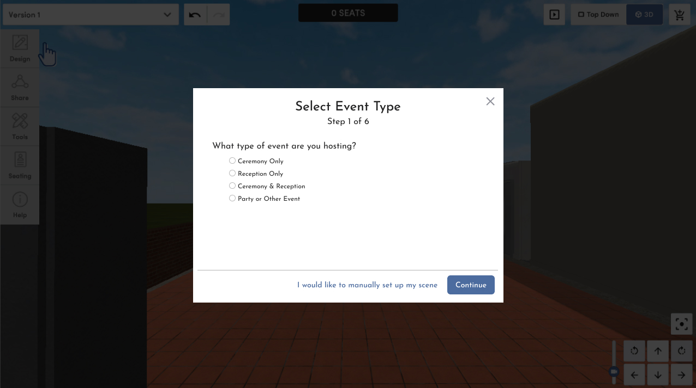
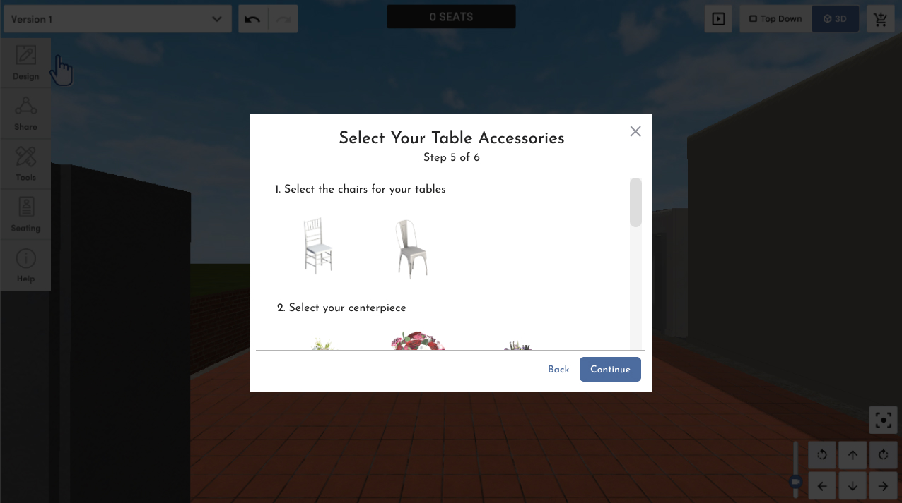
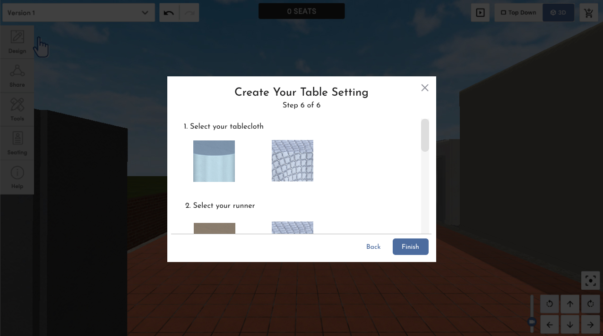
Once finished with the wizard, the scene will automatically generate and the user will have the ability to edit the settings as needed.
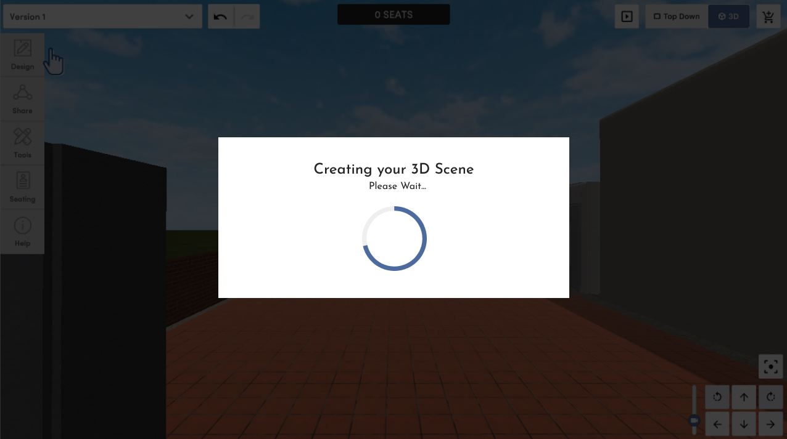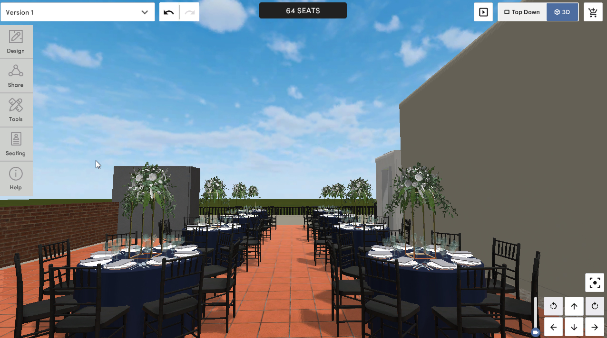
Option 3 - Redesign the UI
When doing an analysis of the UI for the 3D application, it was easy to see how users could get confused as to how to begin. First and foremost, the current UI was not using all of the real estate available on the screen. This makes designing more difficult as the user can get overwhelmed with all the 3D components quite easily.
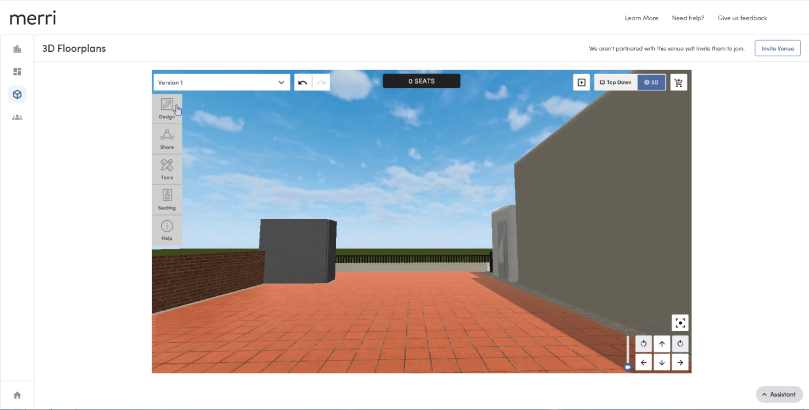The above screenshot shows how the UI looks currently.
One of the most glaring issues is that all of the building options are hidden under menus that the user must click on to access. Even the most users are used to having menu options available to them docked on screen, such as with applications such as Microsoft Word or even MS Paint. These applications geared toward the novice user still display their menu options available in graphical UI elements so the user can intuitively find what they need without much searching.
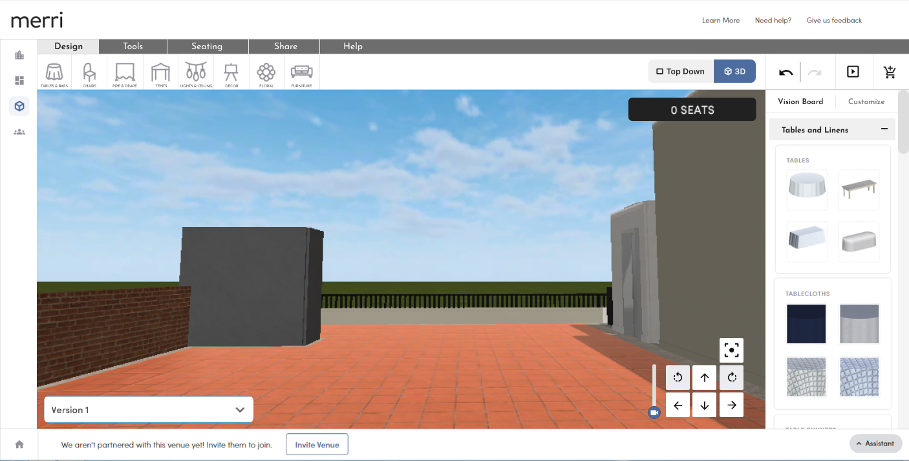The purpose of this redesign is to bring out the building blocks of the 3D application into the main screen. In an effort to make sure that the user is not overwhelemed, we've implemented a tabbed shelf at the top of the screen that the user can click through to see additional options that may not be used as much.
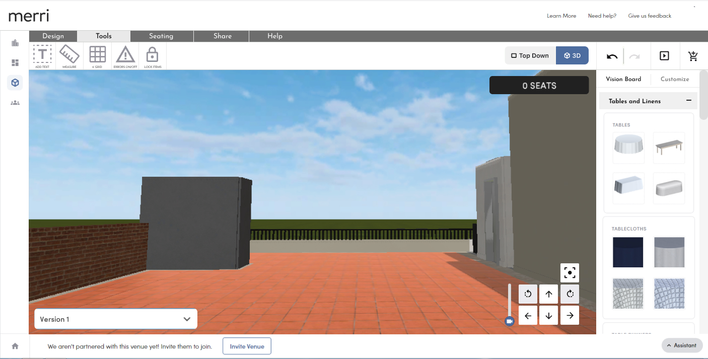Users can select on options in the top menu and add options via a dropdown menu. The user of the dropdown menu helps to keep things hidden until the user needs them to create a more pleasant experience.
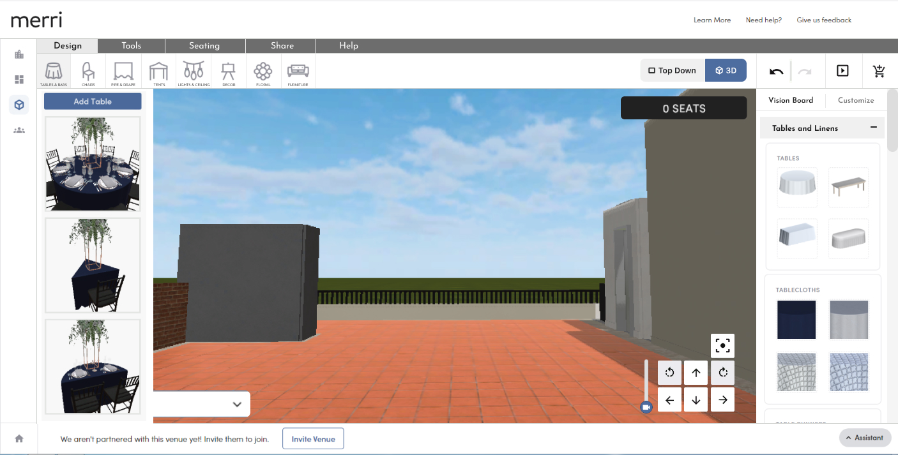After an item, such as a table, is added to the scene, a docked toolbar will display on the right side of the screen. In the prvious UI, the edit options were hidden in a tiny menu in the bottom of the screen. Now, when a user selects an option, the editable features will display docked to the right side of the screen making it more obvious to the user the next steps. The user can select and expand certain options or make adjustments as needed.

The user can expand and collapse sections to find different elements to edit quickly and easily.
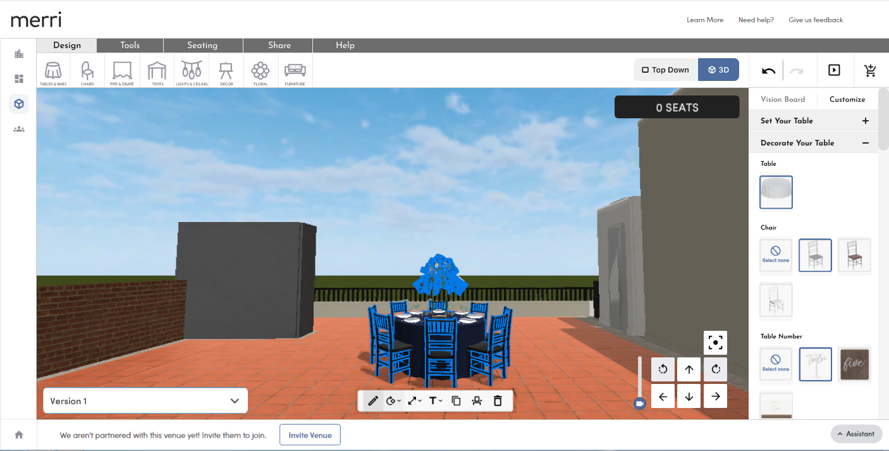Conclusion and Next Steps
While the user stumbles to figure out where to begin when starting the Merri 3D Application, these are some simple solutions that can be implemented to solve the problem. Of course once implemented, it's always best to re-test the design with users and find how the design can be improved to make the user experience easier for the user.